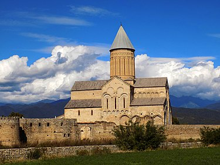

get to know georgia
ალავერდი — საკათედრო ტაძარი და მონასტერი. ალავერდის ეპარქიის ცენტრი. მდებარეობს ალაზნის ველზე სოფ. ალავერდთან (ახმეტის მუნიციპალიტეტი), თელავიდან 20 კმ-ზე.
ალავერდის მონასტერი VI საუკუნის შუა ხანებში დააარსა იოსებ ალავერდელმა. XI საუკუნის დასაწყისში კვირიკე კახთა მეფემ ალავერდის წმ. გიორგის პატარა ეკლესიის ადგილას ააგო საკათედრო ტაძარი, რომელიც უმთავრესად ალავერდის სახელწოდებითაა ცნობილი.
ალავერდის მონასტერი VI საუკუნეში დააარსა იოსებ ალავერდელმა, ერთ-ერთმა 12 ასურელ მამათაგანმა. მდებარეობს ალაზნის ველზე, კავკასიონის ქედის თოვლიანი მთების ფონზე, თელავიდან 20 კმ-ში. დღეს არსებული წმ. გიორგის ტაძარი XI ს-ის პირველ მეოთხედში ააგო კვირიკე კახთა მეფემ ძველი პატარა ეკლესიის ადგილას. საქართველოში ერთ-ერთი უდიდესი საკათედრო ტაძარი (41,7 მ X 26,4 მ) სიმაღლით 50 მეტრზე მეტია.
ალავერდი XI საუკუნიდან საეპისკოპოსო ცენტრი და ეპარქიის მღვდელმთავართა რეზიდენცია იყო. ამავე საუკუნიდან ალავერდის ტაძარი კახეთის სამეფო სახლის საძვლედაც იქცა.

ალავერდის ტაძარი მრავალჯერ დაზიანებულა მომხდურთაგან და მიწისძვრებისაგან. მისი პირველი დიდი რესტავრაციისას (ალექსანდრე კახთა მეფის დროს, XV საუკუნის 80-იან წლებში) აღადგინეს გუმბათის ყელი მთლიანად და კედლების ცალკეული ნაწილები. 1742 მიწისძვრის დროს დაზიანებული ალავერდის რესტავრაცია დაიწყო დედოფალმა თამარმა (1750) და დაამთავრა ერეკლე II-მ. ტაძრის ყველა აღდგენილი ნაწილი აგურით არის ნაგები. XIX საუკუნის ბოლოს ალავერდის ტაძარი შიგნით მთლიანად შეათეთრეს. კედლების გაწმენდის შემდეგ (1966) გამოვლინდა მხატვრობის რამდენიმე ფენა: პირველი და უმნიშვნელოვანესია XI საუკუნის მოხატულობის ფრაგმენტები. სამხრეთის მკლავის კედლებზე შემორჩენილია XV-XVI საუკუნეების, ხოლო დასავლეთ და ჩრდილოეთ კედლებზე XVI-XVII საუკუნეების ფრესკები.
ალავერდის ხუროთმოძღვრულ კომპლექსში, რომელსაც გარშემორტყმული აქვს გალავანი (XVII-XVIII სს.), გაერთიანებულია სხვადასხვა დროის ნაგებობები. პალატი, რომელიც საქართველოს ამ ტიპის ნაგებობათა შორის ერთ-ერთი ყველაზე მნიშვნელოვანია, სამსართულიანი შენობაა. მისი ქვედა სართული - დიდი ზომის კამაროვანი დარბაზი, XVI-XVII საუკუნეებში სატრაპეზო ყოფილა. 1615 ახლო პერიოდშია აგებული განჯის მმართველის, ფეიქარ-ხანის აგურის სასახლე, მისი მთავარი სადგომია რვაწახნაგა, კამარით გადახურული და ფართო თაღებით გახსნილი ნაგებობა, რომელზედაც დაბალი, კვადრატული ოთახია მიშენებული. არის სხვა საცხოვრებელი ნაგებობებიც, აგრეთვე აბანო, მარანი, სამრეკლო და სხვა. თავდაპირველად, ალავერდი მამათა მონასტერი იყო. XVII-XVIII საუკუნეებში კი აქ დაარსდა დედათა მონასტერიც, სადაც მონაზვნად აღკვეცილი სამეფო ოჯახის წევრები ცხოვრობდნენ. ალავერდში ლიტერატურულ საქმიანობას ეწეოდნენ ქართველი მწერლები, კალიგრაფები, მწიგნობარნი, მ.შ. ფილიპე ალავერდელი (XVI-XVII სს.), ზებედე მთავარეპისკოპოსი (XVII ს.), ნიკიფორე ირბახი (ნიკოლოზ ჩოლოყაშვილი, XVII ს.), მარიამ-მაკრინე ბაგრატიონი (XVIII ს.) და სხვები.
ალავერდის კომპლექსი (წმ. გიორგის ტაძარი, სამრეკლო, პალატი, გალავანი, სასახლე, მარანი, აბანო, კარიბჭე) — საქართველოს პრეზიდენტის 2006 წლის 7 ნოემბრის ბრძანებულების თანახმად მიენიჭა ეროვნული მნიშვნელობის კულტურის უძრავი ძეგლის კატეგორია[1]. 2007 წლის 24 ოქტომბრიდან ალავერდის მონასტერი შეტანილია იუნესკოს მსოფლიო მემკვიდრეობის საცდელ სიაში.